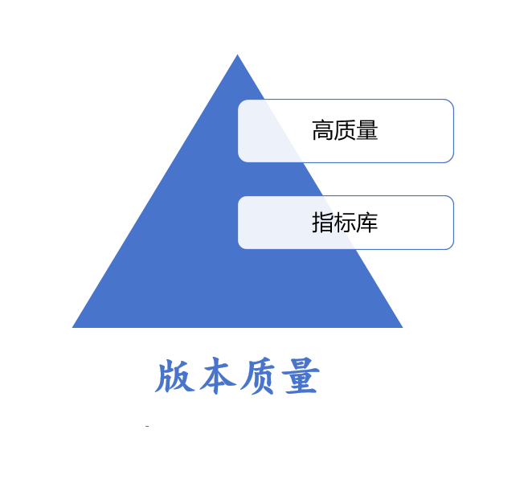

关于版本质量的思考V1.0¶


这个版本质量好不好？
每次遇到这种问题，都很难给出让人满意的答案。
本文梳理下当前我对版本质量的思考，未来会不断迭代更新我的认知。
软件产品质量模型，描述了8个特性：功能适用性、性能效率、兼容性、可用性、可靠性、安全性、可维护性、可移植性。这个模型可以从全局视角，对软件产品质量进行评估。
总不能每次发完版，就套用这个模型来给产品质量打个分吧。
更现实的做法是，定义量化指标多维度进行评估。
指标库是个庞大和复杂的体系，涵盖了项目、产品、需求、开发、测试、质量等多个方面的关键性能指标（Key Performance Indicators，简称KPIs）。
这里只罗列版本质量相关的指标：
线上问题数量及问题级别：系统发布触发用户问题。质量好不好，必然要看问题多不多，影响大不大。
需求缺陷密度：需求缺陷数 / 完成需求数。缺陷少，质量高。想必我们都体验过测出来一堆问题，上线后还是一堆问题的烂质量。
缺陷关闭率：已关闭缺陷数 / 有效缺陷总数。要想提高质量，就要解决问题。曾经历过遗留30个bug不处理就上线的，初创团队抢占市场可以理解，稳定产品的缺陷关闭率低就需要引起重视了。
缺陷关闭时长：所有缺陷(关闭时间 - 创建时间)求和 / 有效缺陷总数。长时间、跨版本都没有解决的问题，一拖再拖，说不定哪天就在线上暴雷了。所有问题都要及时关注，尽快修复。
缺陷逃逸率：上线后发现缺陷数 / 有效缺陷总数。测试同学注意了，灵魂三问，没有测过吗？为什么没测到？为什么不知道？遇到过测试马虎了事的，测试不给力，保不住质量下限。
除了怎么衡量版本质量以外，还有个问题是怎么交付出高质量产品，是让开发少写点bug，还是让测试多找点bug？
有个很有意思的说法是，高质量产品是用出来的。这个认知没有局限于开发、测试谁背锅的责任归属，而是从产品迭代的角度出发，更多的功能，更多的缺陷，就会投入更多的努力去修复这些质量问题，从而提高产品质量。
让更多客户使用，发现更多问题，持续完善产品，才能打磨出高质量产品。